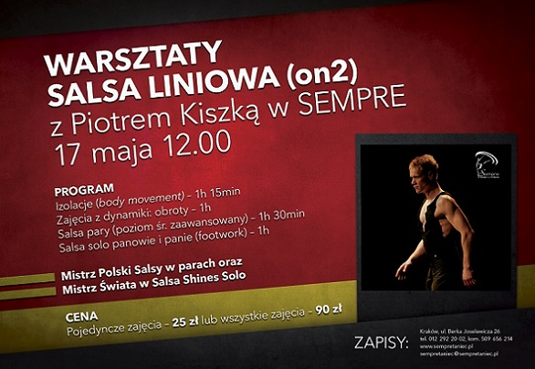

Grafik Warsztatów
12:00 - 13:15 IZOLACJE (body movement)
13:30 - 14.30 OBROTY, DYNAMIKA
14:30 - 16:00 SALSA W PARACH (poziom ¶redniozaawansowany)
16:00 - 17:00 SALSA SOLO (footwork)
Izolacje - izolacje latin afro funk, na bazie techniki Katherine Dunham (mix afro, baletu i funky).
Ka¿dy segment cia³a - g³owa, rêce, tu³ów, szyja - wykonuj± oddzielne ruchy w rytm muzyki. Skupimy siê na æwiczeniach poszczególnych fragmentów cia³a, wykonuj±c najpierw obszerne wolne powtórzenia sekwencji ruchowej, a¿ do mniejszych i szybszych, odkryjesz miê¶nie w swoim ciele, o których istnieniu nie mia³e¶ pojêcia, albo nie wiedzia³e¶ jak ich u¿ywaæ.
Obroty, dynamika - twoje cia³o stanie siê elastyczne, dynamiczne i silne, a ruch bardziej ¶wiadomy. Swoboda i interpretacja muzyki nie bêdzie ju¿ stanowi³a dla Ciebie problemu.
Salsa Shines lub Footwork - to obowi±zkowa umiejêtno¶æ tancerza salsy. Muzyka latynoska sk³ada siê z czê¶ci, do których oprócz tañca w parze nale¿y wykonaæ czê¶ci improwizowane solowe.
Mistrzowie tañcz±cy salsê korzystaj± podczas jednego utworu tylko z kilku sekwencji w parze reszta to solowa zabawa z partnerk±.
Cena
pojedyncze zajêcia - 25z³
ca³e warsztaty - 90z³
Zapisy
Mo¿esz siê zapisaæ u¿ywaj±c poni¿szego formularza
Piotr kiszka:
Od 6ciu lat prowadzê naukê salsy, czêsto uczestniczê sam w treningach i warsztatach organizowanych przez najwy¿szej klasy tancerzy salsy z ca³ego ¶wiata. Z up³ywem czasu przysz³y te¿ sukcesy, o jakich nawet nie marzy³em. Dwa lata temu zdoby³em tytu³ Mistrza Polski Salsy w parach wraz z partnerka Joann±. W roku bie¿±cym 2011 zdoby³em tytu³ Wicemistrza Polski salsy w parach.
W Libercu w Czechach 06.11.2011 na Mistrzostwach ¦wiata zdoby³em tytu³ Mistrza ¦wiata w Salsa Shines Solo. Tañczy³em pokaz na Kongresie Salsy w Wieliczce 2011 z partnerk± Sandr± Kupc i pokaz na najwiêkszym Kongresie w Warszawie Salsa Festival 2011 w choreografii Przemys³awa Wereszyñskiego "ROOTS".